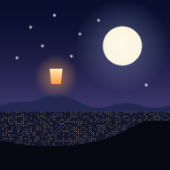

식장산 힐링 전망대
사용설명서 · 컴퓨터와 휴대폰에서 쓰는 법
🏔️이게 뭐예요?
대전 식장산 꼭대기의 누각 식장루에 서 있다고 상상해 보세요. 그 자리에서 보이는 하늘과 대전 풍경을 화면 안에 그대로 옮긴 곳이에요.
- 지금 이 순간의 진짜 하늘이에요. 실제 시계에 맞춰 해가 뜨고 지고, 달은 오늘의 진짜 모양으로 떠요. 별자리도 지금 식장산 위 그 자리에 있어요.
- 진짜 날씨가 반영돼요. 지금 식장산에 구름이 끼면 화면에도 구름이 끼고, 비가 오면 빗줄기가 내려요.
- 혼자가 아니에요. 지금 몇 명이 함께 보고 있는지 보이고, 다른 사람이 띄운 소원 풍등도 하늘에 떠올라요.
🌐인터넷 주소로 보기 (가장 쉬운 방법)
아무것도 켜지 않아도, 컴퓨터든 휴대폰이든 어디서나 이 주소로 들어오면 돼요.
sikjangsan-healing.onrender.com
- 친구나 가족에게 이 주소를 보내면 함께 볼 수 있어요.
- 휴대폰으로 열고 홈 화면에 추가하면 앱처럼 쓸 수 있어요. (아래 '휴대폰으로 보기' 참고)
💤 무료 서버라서 15분 동안 아무도 안 오면 잠들어요. 다음에 들어올 때 깨어나느라 30초~1분 걸릴 수 있어요. 고장이 아니니 조금만 기다려 주세요.
🧹 무료 서버는 잠들었다 깨거나 새로 올릴 때 저장 공간이 초기화돼요. 그래서 인터넷 주소의 풍등과 방명록은 잠시 머무는 기록이에요. 마음 날씨는 각자의 브라우저에 저장되니까 지워지지 않아요.
💻내 컴퓨터에서 켜는 방법
- 내 컴퓨터에 저장해 둔
식장산힐링전망대폴더를 열어요. - 폴더 위쪽의 주소창(경로가 적힌 곳)을 클릭하고
cmd라고 입력한 뒤 Enter를 눌러요. 검은 창이 열려요. - 검은 창에
node serve.js를 입력하고 Enter를 눌러요. 식장산 힐링 전망대: http://localhost:5173이라는 글자가 나오면 성공이에요. 그 아래휴대폰에서 (같은 와이파이): …주소는 휴대폰으로 볼 때 써요.- 크롬 같은 브라우저 주소창에
localhost:5173을 입력해요.
💡 검은 창은 닫지 마세요. 그 창이 '서버'예요. 방명록과 풍등을 저장하고, 함께 보는 사람 수를 세는 역할을 해요. 다 쓰고 나면 그때 닫으면 돼요.
🛡️ 처음 켤 때 Windows 보안 경고(방화벽) 창이 뜰 수 있어요. 휴대폰으로도 보려면 개인 네트워크에 체크하고 허용을 눌러 주세요.
📱휴대폰으로 보기
가장 쉬운 방법은 위의 인터넷 주소로 들어가는 거예요. 아래는 내 컴퓨터에서 켠 전망대를 같은 와이파이의 휴대폰으로 볼 때의 방법이에요.
휴대폰에서 localhost를 치면 열리지 않아요. localhost는 '이 기기 자신'이라는 뜻이라서, 휴대폰에서는 휴대폰 자기 자신을 가리키거든요. 대신 컴퓨터의 주소로 들어가요.
- 컴퓨터에서 서버를 켜 둬요. (위의 '켜는 방법')
- 휴대폰을 컴퓨터와 같은 와이파이에 연결해요.
- 컴퓨터 화면에서 오른쪽 ⓘ 식장산 이야기를 열면 '휴대폰으로 보기'에 주소가 나와요. 예:
192.168.0.5:5173(검은 창에도 같은 주소가 적혀 있어요.) - 휴대폰 브라우저(사파리, 크롬, 삼성 인터넷) 주소창에 그 주소를 그대로 입력해요.
홈 화면에 앱처럼 추가하기
🍎 아이폰 (사파리)
- 사파리로 주소에 들어가요.
- 아래쪽 공유 버튼(네모에 위쪽 화살표)을 눌러요.
- 홈 화면에 추가를 눌러요.
- 홈 화면의 식장산 아이콘을 누르면 주소창 없이 꽉 찬 화면으로 열려요.
🤖 갤럭시 (크롬·삼성 인터넷)
- 브라우저로 주소에 들어가요.
- 오른쪽 위(또는 아래) ⋮ / ≡ 메뉴를 눌러요.
- 홈 화면에 추가를 눌러요.
- 홈 화면의 식장산 아이콘으로 바로 들어갈 수 있어요.
💡 휴대폰으로 보는 동안에도 컴퓨터의 서버(검은 창)는 켜져 있어야 해요. 컴퓨터를 끄거나 다른 와이파이로 가면 열리지 않아요. 집 밖에서도 보려면 인터넷 서버에 올려야 하는데, 원하시면 그것도 도와드릴 수 있어요.
🖥️화면 둘러보기 (컴퓨터)
📋 왼쪽 위 카드
- LIVE는 지금 실제 시각이라는 뜻이에요. 시간 여행 중일 때는 '시간 여행 중'으로 바뀌어요.
- 날짜와 시각 아래에 지금 하늘의 분위기가 한 줄로 나와요. 예: "노을이 대전 시내를 붉게 물들이고 있어요"
- 유성우나 보름달 같은 특별한 하늘 소식이 있는 날엔 🌠 한 줄이 더 생겨요.
- 맨 아래에 "지금 3명이 함께 식장산 하늘을 보고 있어요"처럼 함께 보는 사람 수가 나와요.
🔘 오른쪽 아이콘 9개 (위에서부터)
| 아이콘 | 하는 일 |
|---|---|
| 🔊 자연의 소리 | 바람, 새, 풀벌레, 부엉이 소리. 비가 오면 빗소리도 나요. 끄기 전까지 계속 흐르고, 켜 둔 채 떠나면 다음에 화면을 한 번 누를 때 이어서 흘러요. |
| 🎵 클래식 음악 | 짐노페디, 바흐 프렐류드, 캐논, 자장가, 작은 별, 엘리제를 위하여. 피아노·오르골·하프 소리를 고르고, 15·30·60분 잠들기 타이머도 있어요. |
| ◎ 숨 고르기 | 동그라미를 따라 4초 들이쉬고, 2초 멈추고, 6초 내쉬어요. 화면을 누르면 닫혀요. |
| 🏮 소원 풍등 | 소원을 적으면 풍등이 발밑에서 떠올라 10분 동안 멀리 날아가요. 다른 사람들의 하늘에도 떠올라요. |
| 🌤️ 마음 날씨 | 오늘 마음을 맑음·구름 조금·흐림·비·천둥·무지개로 남겨요. 한 달 달력에 모여요. |
| ✏️ 방명록 | 한 줄 글을 남기면 다른 사람 화면의 하늘에도 잠시 떠올라요. |
| ⓘ 식장산 이야기 | 오늘의 한 줄, 하늘 소식, 일출·일몰 시각, 휴대폰 접속 주소, 보기 설정이 있어요. |
| ⛶ 전체 화면 | 화면을 꽉 채워요. |
| 👁️ 풍경만 보기 | 메뉴를 다 숨겨요. 화면을 한 번 누르면 다시 나와요. |
🧭 아래쪽 버튼들
- 해돋이 방향 · 대전 야경 · 달 찾기 · 북극성: 누르면 그쪽으로 고개를 돌려줘요.
- 시간 막대: 끌어서 하루 중 원하는 시각으로 가 봐요. 막대 색깔이 그날의 하늘색이에요.
- 1× · 60× · 600× · 3600×: 시간이 흐르는 빠르기예요. 3600×로 하면 하루가 24초 만에 지나가요.
- 일출 · 한낮 · 일몰 · 한밤: 그 시간으로 바로 가요. 일출과 일몰은 조금 전부터 60배 빠르게 보여줘요.
- 실시간: 지금 이 순간으로 돌아와요.
🖱️ 직접 둘러보기
- 화면을 좌우로 끌면 사방을 둘러봐요.
- 아래로 끌면 고개를 들어 밤하늘을 올려다봐요.
- 마우스 휠로 가까이 또는 멀리 볼 수 있어요.
- 키보드:
← → ↑ ↓둘러보기,+ −확대,H메뉴 숨기기,L실시간으로.
👆휴대폰 화면
휴대폰으로 열면 엄지로 쓰기 편하게 화면이 자동으로 바뀌어요. 오른쪽 아이콘 대신 아래 탭 막대가 생겨요.
| 탭 | 하는 일 |
|---|---|
| 🔊 소리 | 자연의 소리 켜기·끄기 (켜지면 탭이 노랗게 빛나요) |
| 🎵 음악 | 클래식 음악 목록이 아래에서 올라와요. |
| 🏮 풍등 | 소원 풍등 띄우기 |
| 🕐 시간·방향 | 시간 막대, 빠르기, 일출·일몰 바로가기, 바라보는 방향 버튼이 올라와요. |
| ⋯ 더보기 | 숨 고르기, 마음 날씨, 방명록, 식장산 이야기, 전체 화면, 풍경만 보기 |
- 한 손가락으로 밀면 둘러보고, 두 손가락을 벌리거나 오므리면 확대·축소해요.
- 열려 있는 창은 풍경을 톡 누르면 닫혀요.
- 휴대폰을 가로로 눕히면 더 넓은 하늘을 볼 수 있어요.
🔈 휴대폰이 무음(진동) 모드면 아이폰에서는 소리가 안 날 수 있어요. 옆면 스위치를 확인해 주세요.
🎁숨어 있는 작은 선물들
- 들어올 때마다 화면 가운데에 '오늘의 한 줄' 위로의 글귀가 떠올라요. 날마다 바뀌고, 같은 날 온 사람은 모두 같은 글을 봐요.
- 밤에 별똥별이 떨어지면 "소원을 빌어보세요 ✨" 알림이 떠요. 유성우 날엔 훨씬 많이 떨어져요.
- 계절마다 풍경이 바뀌어요. 봄엔 벚꽃잎, 여름밤엔 반딧불이, 가을엔 단풍잎, 겨울엔 산등성이에 눈이 쌓여요.
- 해 질 녘엔 대전 시내 불빛이 하나둘 켜지고, 새벽 1~5시엔 조금씩 꺼져요.
- 식장루 처마의 등불과 송신탑의 빨간 불빛이 밤에 깜빡여요.
🗂️내 기록은 어디에 저장돼요?
| 무엇 | 어디에 | 누가 봐요? |
|---|---|---|
| 방명록, 소원 풍등 | 폴더 안 data 폴더 | 들어온 모든 사람 |
| 마음 날씨 | 지금 쓰는 브라우저 안 | 나만 (기기마다 따로) |
| 소리 켜짐, 보기 설정 | 지금 쓰는 브라우저 안 | 나만 (기기마다 따로) |
| 함께 보는 사람 수 | 서버 메모리 | 저장되지 않아요 |
💾
data 폴더에는 소중한 소원과 글이 들어 있어요. 컴퓨터를 옮기거나 정리할 때 함께 백업해 두세요. GitHub에는 올리지 않았어요.🐙GitHub
- 주소: github.com/s1004sb/sikjangsan-healing (공개 저장소)
- 프로그램 코드만 올라가 있어요. 개인 이메일은 가렸고, 소원·방명록 기록은 빠져 있어요.
- 고친 내용을 다시 올리고 싶으면 Claude에게 "깃허브에 업데이트해줘"라고 말하면 돼요.
- 비공개로 바꾸려면 저장소의 Settings → 맨 아래 Danger Zone → Change visibility에서 바꿀 수 있어요.
🧰이럴 땐 이렇게
| 이런 일이 생기면 | 이렇게 해 보세요 |
|---|---|
| 화면이 안 열려요 | 검은 창(서버)이 켜져 있는지 확인해요. 닫았다면 '켜는 방법'을 다시 해요. |
| 휴대폰에서 안 열려요 | ① 같은 와이파이인지 ② 서버가 켜져 있는지 ③ 주소 끝에 :5173을 붙였는지 ④ Windows 방화벽에서 허용했는지 확인해요. |
| 방명록이나 풍등이 안 써져요 | 파일을 더블클릭해서 열었다면, 꼭 localhost:5173(휴대폰은 컴퓨터 주소)로 들어가요. |
| 소리가 안 나요 | 화면을 한 번 눌러 주세요. 브라우저는 사람이 한 번 눌러야 소리를 낼 수 있어요. 휴대폰은 무음 모드도 확인해요. |
| 날씨가 맑게만 나와요 | 인터넷이 끊겼거나, ⓘ 설정에서 '실제 날씨 반영'이 꺼져 있을 수 있어요. |
| 풍등이 금방 안 떠요 | 같은 사람은 20초에 한 번 띄울 수 있어요. 잠시 뒤 다시 해 보세요. |